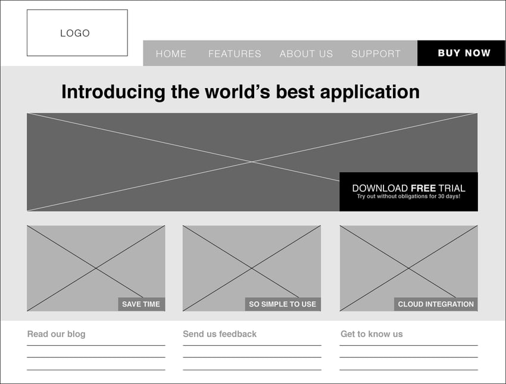
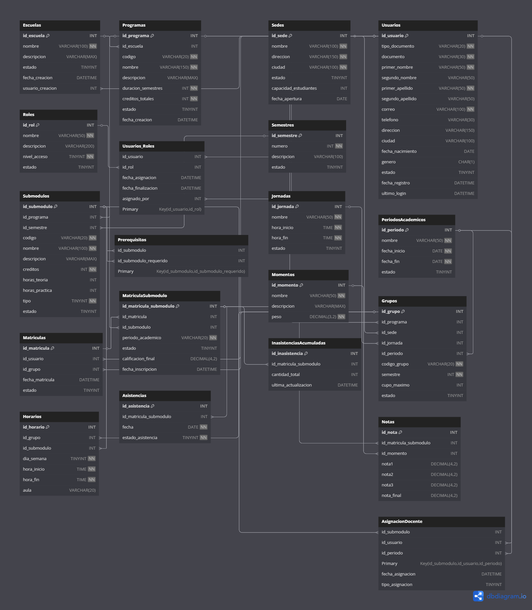

De la Idea a la Interacción: Parte de un Portal Académico
Un resumen del viaje desde las maquetas estáticas de HTML hasta un prototipo funcional incluyendo lógica y BD

Hoy hemos emprendido un viaje fascinante: transformar un conjunto de ideas y páginas estáticas en un prototipo de aplicación web interactiva. El objetivo era claro: crear un portal donde un profesor pudiera gestionar notas y asistencias, y que un estudiante pudiera visualizar esa información. A continuación, desglosamos cada etapa de esta construcción.
Paso 1: El Esqueleto con HTML
Todo comenzó con la base de cualquier proyecto web: el HTML. Definimos la estructura semántica de nuestras tres vistas principales: la página de inicio, la interfaz del profesor y la del estudiante. Creamos tablas para los datos, formularios con campos `` para que el profesor pudiera registrar las notas y menús de navegación para movernos entre las distintas secciones.
 Imagen de referencia para maquetaciónUn elemento clave fue la tabla de calificaciones, diseñada para ser intuitiva para el profesor, con columnas para cada momento y nota.
<table id="tabla-calificaciones">
<thead>
<tr>
<th rowspan="2">Estudiante</th>
<th colspan="3">Momento 1 - 30%</th>
<!-- ... más cabeceras ... -->
</tr>
</thead>
<tbody>
<tr>
<td>Isabella García Rojas</td>
<td><input type="number"></td>
<!-- ... más inputs ... -->
</tr>
</tbody>
</table>Paso 2: La Apariencia con CSS y Diseño Responsive
Una estructura sin estilo es como un plano sin construir. Usando CSS, dimos vida al diseño. Sin embargo, el mayor desafío fue asegurar que la experiencia fuera óptima en cualquier dispositivo. Aquí es donde entró en juego el **diseño responsive**.
Mediante Media Queries, definimos reglas para que el diseño se adaptara a tablets y móviles. La tabla de notas, muy ancha para un celular, se transformó en un formato de "tarjetas" verticales, y el menú de navegación se colapsó en un ícono de hamburguesa funcional, ¡todo sin una sola línea de JavaScript!
/* El corazón del diseño responsive */
@media (max-width: 768px) {
/* Ocultamos el menú de escritorio */
.contenedor-nav {
display: none;
}
/* Mostramos el ícono de hamburguesa */
.contenedor-menu-hamburguesa {
display: block;
}
/* Transformamos las filas de la tabla en bloques */
#registro-notas tr {
display: block;
margin-bottom: 1rem;
border: 1px solid #ddd;
}
/* Ocultamos la cabecera original */
#registro-notas thead {
display: none;
}
}Paso 3: La Interactividad con JavaScript
Aquí es donde el proyecto cobró vida. El reto era: ¿cómo puede la página del profesor "hablar" con la del estudiante sin un servidor? La solución fue utilizar la API de almacenamiento web del navegador: `localStorage`.
Creamos un script de JavaScript que hacía lo siguiente:
- Guardar Datos: Al hacer clic en "Guardar", el script recorre la tabla del profesor, recoge los valores de cada `input` y los almacena como un objeto de texto en `localStorage`.
- Borrar Datos: La función de borrado limpia los `input` de una fila y vuelve a guardar el estado actualizado, haciendo el cambio permanente en la sesión.
- Cargar y Calcular: Al cargar la página del estudiante, el script lee los datos guardados, busca la información del estudiante correcto, y la usa para rellenar la tabla visual. Lo más importante, ejecuta el algoritmo para calcular la **nota final ponderada** (30%, 35%, 35%), mostrando al estudiante un resultado preciso y calculado al instante.
Paso 4: El Cerebro con SQL
Finalmente, dimos el salto conceptual hacia una aplicación real y robusta. Reconocimos que `localStorage` es una solución temporal y local. Para un sistema real, multiusuario y seguro, necesitamos un **backend** y una base de datos. Diseñamos la estructura de esta base de datos usando SQL.
Definimos tablas clave como `Usuarios`, `Cursos`, y `Escuelas`.
 Diagrama entidad-relacion del proyectoPara hacer la base de datos más inteligente y segura, encapsulamos la lógica en **Stored Procedures (SP)**. Creamos procedimientos para tareas repetitivas y críticas, como añadir un nuevo usuario o permitir, filtrar los estudiantes por programa, etc.
-- SP para un resumen genera de la BD.
CREATE PROCEDURE sp_ObtenerResumenGeneral
AS
BEGIN
-- Esta consulta devuelve una única fila con varias columnas de conteo.
-- Cada SELECT dentro del SELECT principal es una subconsulta que calcula un valor.
SELECT
(SELECT COUNT(*) FROM Usuarios) AS TotalUsuarios,
(SELECT COUNT(*) FROM Usuarios WHERE Activo = 1) AS UsuariosActivos,
(SELECT COUNT(*) FROM Escuelas) AS TotalEscuelas,
(SELECT COUNT(*) FROM Cursos) AS TotalCursos,
(SELECT COUNT(*) FROM Inscripciones) AS TotalInscripciones;
END;Conclusión: Uniendo las Piezas
Lo que comenzó como simples archivos HTML se ha convertido en el plano y prototipo de una aplicación web completa. Cada tecnología jugó un papel vital: HTML dio la estructura, CSS la belleza y adaptabilidad, JavaScript la interactividad inmediata, y SQL el diseño para un cerebro central, robusto y escalable. Este viaje demuestra cómo las diferentes capas de la web se unen para crear experiencias funcionales y significativas.